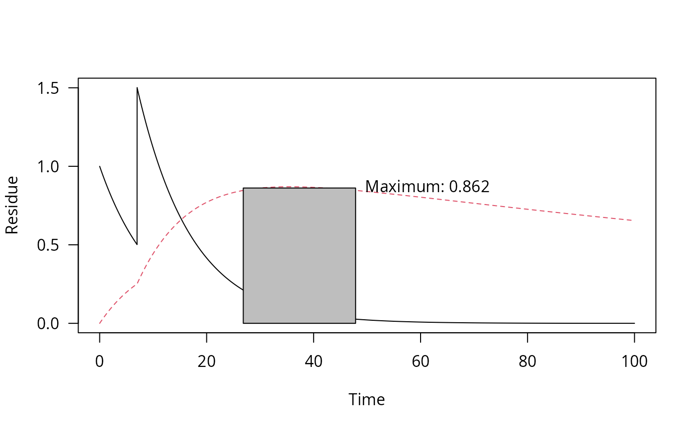

sawtooth.RdIf the application pattern is specified in applications,
n and i are disregarded.
sawtooth(
x,
n = 1,
i = 365,
applications = data.frame(time = seq(0, (n - 1) * i, length.out = n), amount = 1)
)A one_box object
The number of applications. If applications is specified, n is ignored
The interval between applications. If applications is specified, i
is ignored
A data frame holding the application times in the first column and the corresponding amounts applied in the second column.
applications = data.frame(time = seq(0, 14, by = 7), amount = c(1, 2, 3))
pred <- one_box(10)
plot(sawtooth(pred, applications = applications))
m_2 <- mkinmod(parent = mkinsub("SFO", "m1"), m1 = mkinsub("SFO"))
#> Temporary DLL for differentials generated and loaded
fit_2 <- mkinfit(m_2, FOCUS_2006_D, quiet = TRUE)
#> Warning: Observations with value of zero were removed from the data
pred_2 <- one_box(fit_2, ini = 1)
pred_2_saw <- sawtooth(pred_2, 2, 7)
plot(pred_2_saw, max_twa = 21, max_twa_var = "m1")

max_twa(pred_2_saw)
#> $max
#> parent m1
#> 0.7834481 0.8617049
#>
#> $window_start
#> parent m1
#> 0.00 26.85
#>
#> $window_end
#> parent m1
#> 21.00 47.85
#>